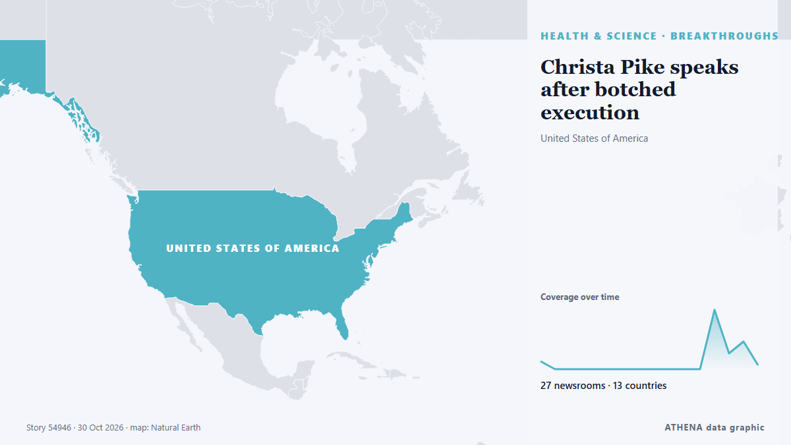

Pharma & biotech
| 18 Oct | 0 |
|---|---|
| 19 Oct | 0 |
| 20 Oct | 0 |
| 21 Oct | 1 |
| 22 Oct | 0 |
| 23 Oct | 0 |
| 24 Oct | 0 |
| 25 Oct | 1 |
| 26 Oct | 1 |
| 27 Oct | 3 |
| 28 Oct | 6 |
| 29 Oct | 4 |
| 30 Oct | 1 |
| 31 Oct | 0 |

Christa Pike speaks after botched execution
Death row inmate Christa Pike has spoken in a statement after the botched execution that left her in serious pain. from Sydney Morning Herald
Aspen Neuroscience lands $141M IPO, while Bambusa secures $169M
A Parkinson’s cell therapy biotech and an I&I startup from former BioNTech leaders joined the public markets on Friday, extending a sizzling IPO streak for drug developers. from Endpoints News
3 arrested following Sydney methamphetamine bust
BATU PAHAT: A couple were among three people arrested during an operation by the General Operations Force (GOF) that led to the seizure of 5.2kg of methamphetamine here and in Muar two days ago. from New Straits Times
Son dead, body ‘seized’ by police, father ‘missing’: A Punjab family’s ‘drug story’
A Chatsworth family mourning the murder of their son alleged plain-clothes police raided their home without a warrant and mocked them when no drugs were found. from IOL
Machado walks tightrope with supporters, Trump
Europe's pharma industry sees lessons in China's success. from Euractiv
HHS moves to allow compounding of some unapproved peptides
Kennedy and his MAHA movement have embraced peptides, though there's little evidence for many of the wellness compounds. from STAT News
Al-Sulaymaniyah hosts international cosmetic surgery conference
Shafaq News- Al-Sulaymaniyah An estimated 500 to 600 participants, including doctors and medical specialists from Iraq, neighboring countries, and Europe, are attending a two-day conference on… from Shafaq News (English)
COAS backs local production of military equipment
COAS seeks private sector investment in youths, local defence manufacturing By Sumaila Ogbaje The Chief of Army Staff (COAS), Lt.-Gen. from News Agency of Nigeria
FDA scientists opposed Trump administration’s move to ease peptide access
Effort to loosen rules on unproven peptide drugs, favored by RFK Jr, faced fierce pushback from agency scientists A plan to give people in the United States easier access to unproven peptide drugs… from The Guardian
Without electricity, food or medicine – civilian evacuation planned in Russian-occupied Oleshky
A temporary ceasefire is allowing preparations to evacuate civilians from Russian-occupied Oleshky amid severe humanitarian shortages. from Baltic News Network
Lai’s trust, approval ratings rebound
SEOUL, Oct. 26 (Yonhap) -- President Lee Jae Myung's approval rating fell to 35.... from Yonhap (English)
GSK sees falling vaccine sales take shine off earnings
The drugs giant revealed vaccine sales fell 2% to £2.6 billion in the three months to September 30 as demand waned for its shingles and RSV jabs. from The Irish News (Belfast)